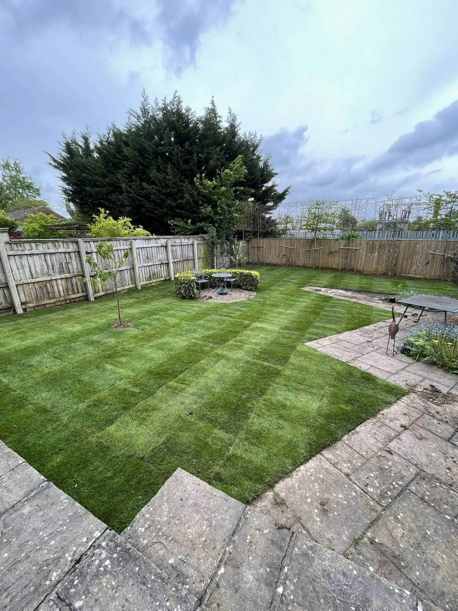
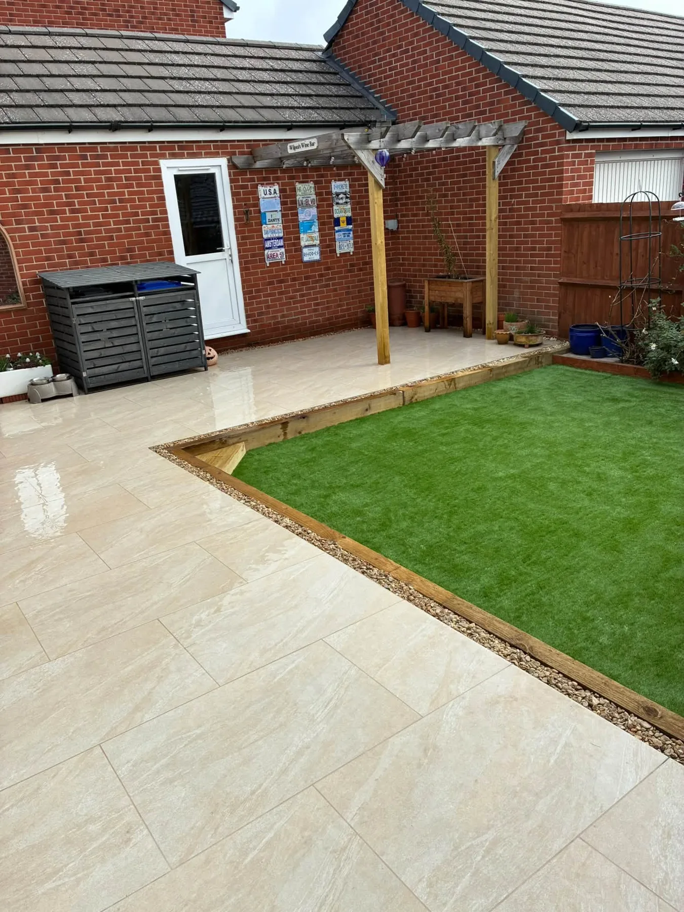
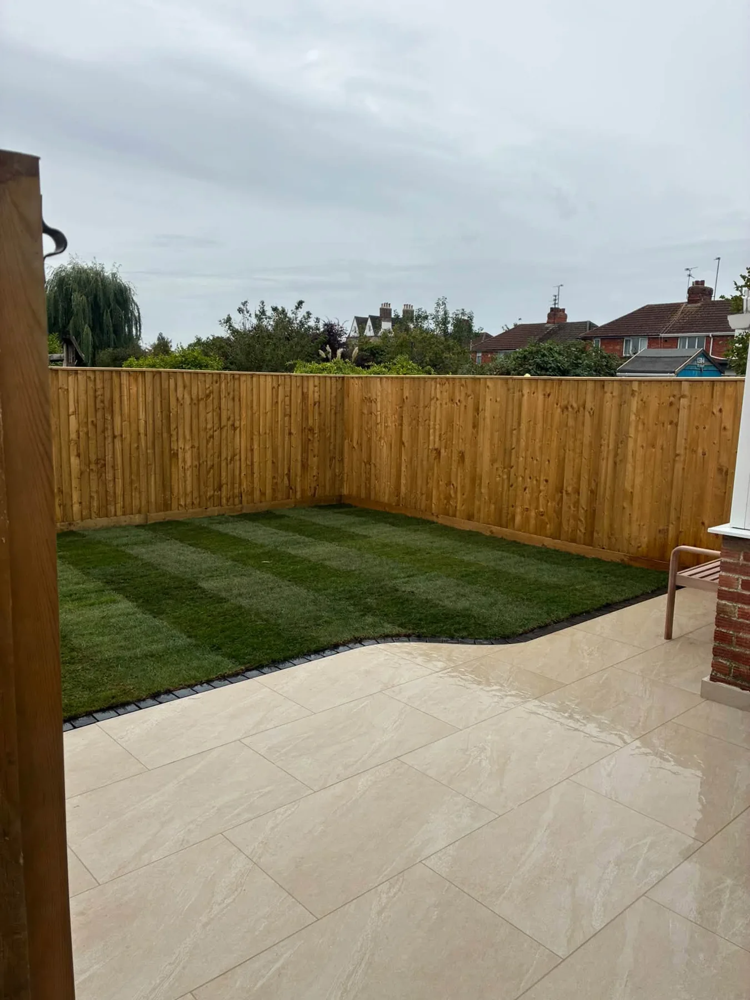
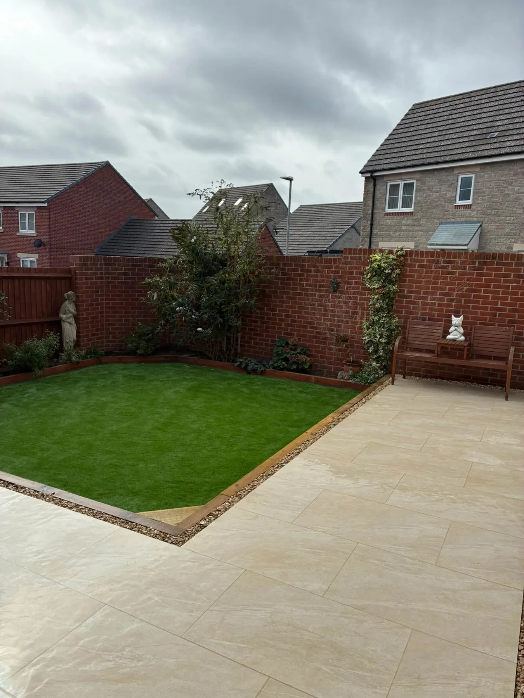
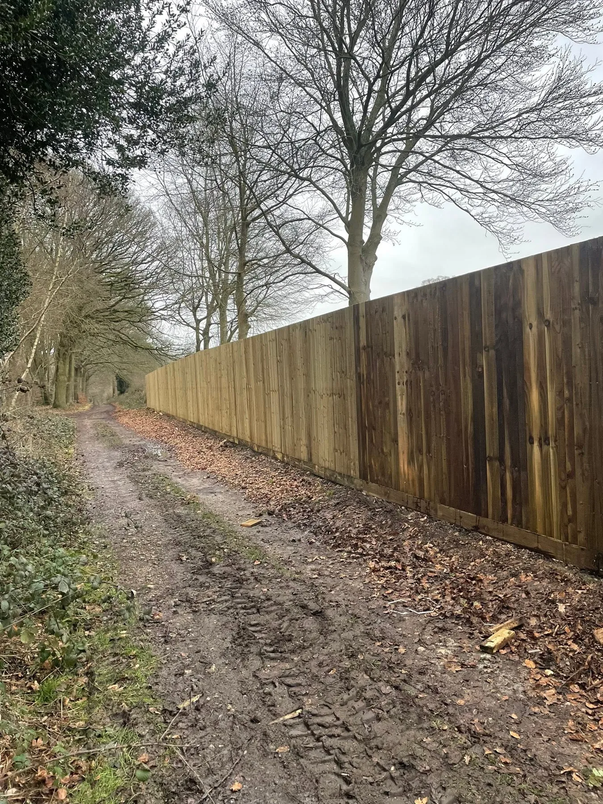
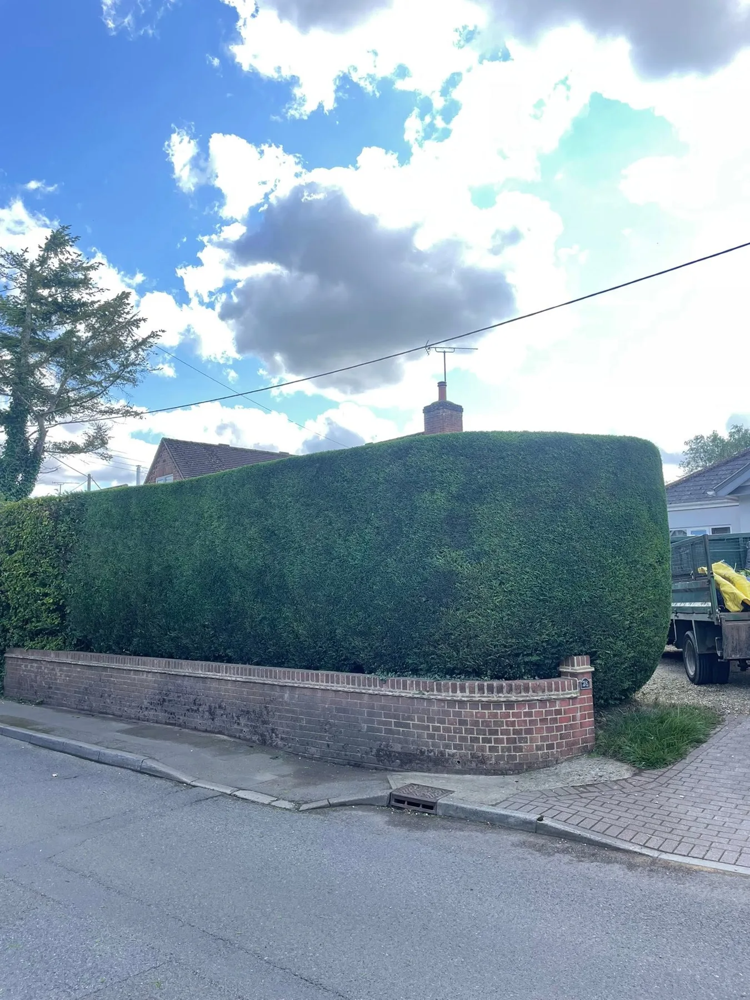
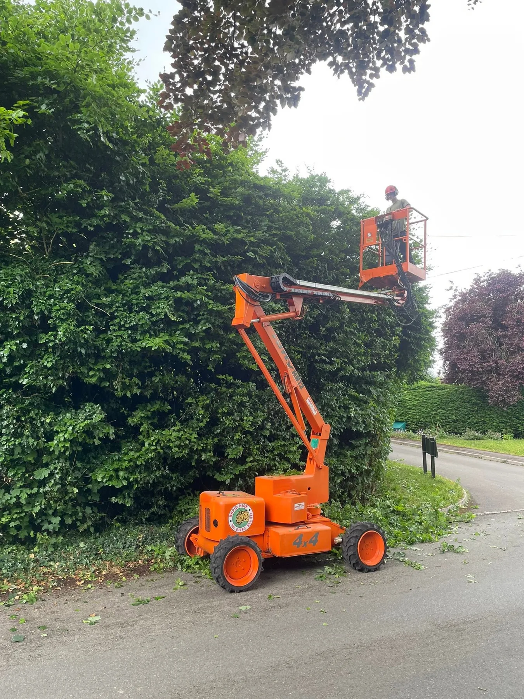

LandscapingOutdoor spaces shaped for the home

GREATFIELD · SWINDON LANDSCAPING
Outdoor spaces with a Signature finish.
From garden design to ongoing maintenance, Signature Landscapes works across lawns, patios, fencing and grounds.
Lawns & turfPatios & pavingFencingHedges & maintenance
Lawns & turfFresh, carefully finished lawns
Patios & pavingPractical spaces to enjoy outdoors
Fencing & upkeepBoundaries, hedges and maintenance
FROM DESIGN TO MAINTENANCE
Built for everyday use. Kept looking its best.
The supplied projects show new lawns, generous paved areas, timber fencing and tidy green boundaries. Signature Landscapes works on the details that bring a garden together.
Request a quote →

PAVING & GARDEN SPACES
Room to step outside.
A finished patio gives a garden somewhere to sit and gather. The supplied projects pair broad paved surfaces with neatly edged lawns and fencing.
Talk about your project →
RECENT WORK
See the work for yourself.
Real Signature Landscapes work, from garden finishes to fencing and hedge care.



FENCING & MAINTENANCE
Defined boundaries. Well-kept spaces.
From newly installed timber fencing to shaped hedges, Signature Landscapes also works on the parts of a garden that frame the space.
Ask about your garden →SIGNATURE LANDSCAPES · SWINDON
From the first idea to the final tidy-up.
Signature Landscapes describes its service as running from design to maintenance. The portfolio shows work across lawns, patios, fencing and grounds care in the Swindon area.
01
Garden landscaping
Shape the space around how you use it.
02
Patios, lawns & fencing
Bring the main garden elements together.
03
Ongoing upkeep
Keep hedges and grounds in good order.
REQUEST A QUOTE
Tell us about your garden.
Complete the form and WhatsApp will open with your details ready to send. This is a quote request, not a confirmed booking.
Greatfield · Swindon
SIGNATURE LANDSCAPES
Ready to work on your garden?
Greatfield · Swindon